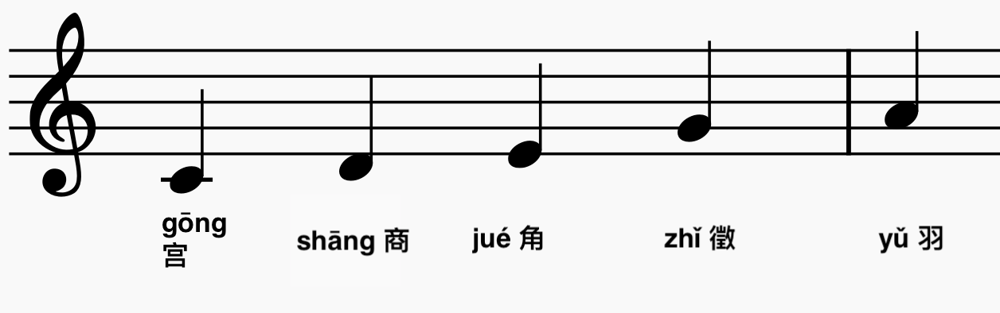

Most Chinese music uses a pentatonic scale, with the intervals (in terms of lǜ) almost the same as those of the major pentatonic scale. The notes of this scale are called gōng 宫, shāng 商, jué 角, zhǐ 徵 and yǔ 羽.
Gōng 宫
Shāng 商
Jué 角
Zhǐ 徵
Yǔ 羽
Pentatonic Scale
Scales also include two changing "bian tones" to help with transposition and modulation.
Seven Tone Scale
You can also have modes of scales. This a way of saying that
the pentatonic scale can begin and on any of its five tones.

Gōng 宫 Mode
Shāng 商 Mode
Jué 角 Mode
Zhǐ 徵 Mode
Yǔ 羽 Mode